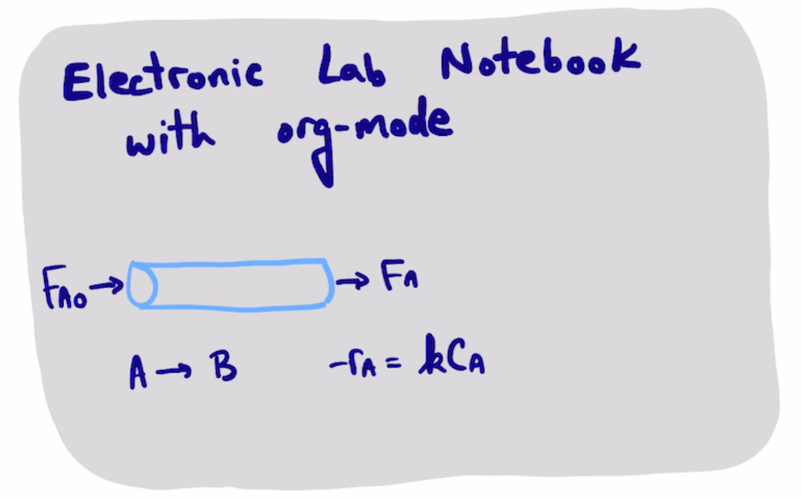
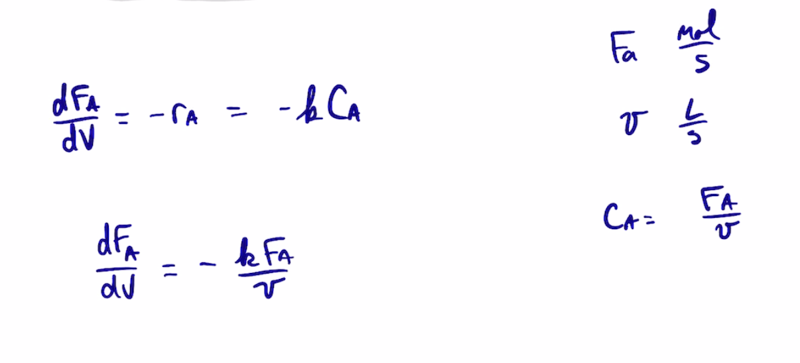

A parametric study
Table of Contents


1. Solve the PFR several times
1.1. small rate constant
from scipy.integrate import solve_ivp k = 0.1 nu = 1 Vspan = (0, 2) Fa0 = 1 def ode(V, Fa, k): return -k * Fa / nu sol = solve_ivp(ode, Vspan, (Fa0,), args=(k,)) sol.y[0][-1]
0.8187307577762143
sol
message: The solver successfully reached the end of the integration interval.
success: True
status: 0
t: [ 0.000e+00 1.585e-01 1.744e+00 2.000e+00]
y: [[ 1.000e+00 9.843e-01 8.400e-01 8.187e-01]]
sol: None
t_events: None
y_events: None
nfev: 20
njev: 0
nlu: 0
1.2. a medium rate constant
Solve for a larger k.
sol = solve_ivp(ode, Vspan, (Fa0,), args=(2 * k,))
sol.y[0][-1]
0.6703201753500971
1.3. a larger rate constant
And one more even bigger rate constant.
sol = solve_ivp(ode, Vspan, (Fa0,), args=(4 * k,))
sol.y[0][-1]
0.4493323314834313
1.4. run it in a loop
K = [k, 2*k, 4*k] Fa = [solve_ivp(ode, Vspan, (Fa0,), args=(_k,)).y[0][-1] for _k in K] K, Fa
| 0.1 | 0.2 | 0.4 |
| 0.8187307577762143 | 0.6703201753500971 | 0.4493323314834313 |
import json with open('results.json', 'w') as f: f.write(json.dumps({'K': K, 'Fa': Fa}))
jq '.K' results.json